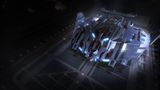

Оружейные точки
4L · 3M · 2S (девять креплений)
Девять оружейных креплений и самая прочная броня в игре делают Type-10 прирождённым тяжёлым кораблём AX. Он удерживает позицию в зоне конфликтов AX, накрывает разведчиков и рои огнём турелей и выдерживает атаки перехватчиков, от которых лёгким кораблям приходится уклоняться. В рейтинге он сразу за манёвренными средними кораблями: он очень медленный и уступает подвижному перехватчику один на один. Его преимущества — живучесть и число креплений, а не изящество.

Корабль получает оценку пригодности от 1 до 100 в полностью улучшенной сборке для этой роли, в сравнении со всеми другими кораблями той же роли. См. методику оценки кораблей.
Пока Chieftain уклоняется, а Krait быстро уничтожает цель, Type-10 Defender просто держит удар. Корпус тяжёлого грузовоза Lakon, превращённого в военный корабль, несёт девять креплений (четыре больших, три средних и два малых), два военных отсека и восемь внешних креплений. Базовая броня 1,044 — самая прочная среди всех кораблей. Этого достаточно, чтобы выжить в пространстве таргоидов. Это лучшая крепость AX: поставьте турельные усовершенствованные многоствольные пушки AX и пару пушек Гаусса Стражей, удерживайте позицию и положитесь на броню и плотность огня.
Его стихия — зоны конфликтов AX и рои разведчиков, а не дуэль с перехватчиком. Type-10 очень медленный, тяжело разворачивается и имеет слабый для своего размера щит. Он не успевает сменить позицию при атаке на сердце или последовать за уходящим перехватчиком. Вместо этого он принимает молнии и коррозионный урон на себя. Мощные усиления модулей и усилителей корпуса Стражей помогают пережить разряд, который выводит модули лёгких кораблей из строя, а восемь внешних креплений позволяют постоянно сбрасывать тепло и удалять едкое вещество. В зонах конфликтов AX, при поддержке у шпилей и зачистке роёв он держится дольше всех.
Продолжительные бои против таргоидов: зоны конфликтов AX, зачистка роёв разведчиков, поддержка у шпилей и наземных объектов и прикрытие звена. Любой бой, в котором почти неуязвимый корабль с мощным вооружением полезнее подвижного.
Четыре особенности, которые делают Type-10 лучшим тяжёлым кораблём AX:
Он очень медленный, плохо разворачивается и имеет слабые щиты. Он не может уйти от атаки в фазе сердца или догнать убегающего перехватчика, поэтому полагается на броню. Один на один против подвижного «Циклопа» или «Медузы» он уничтожает цель медленно и принимает удары. Его стихия — рои и зоны конфликтов, где число креплений и живучесть перевешивают подвижность. Для быстрой одиночной охоты на перехватчиков Chieftain или Krait подходит лучше.
Самая прочная броня в игре (1,044 в базе, около 6,000+ после улучшений), девять оружейных и восемь внешних креплений делают его крепостью AX. Но скорость 179 м/с и тяжёлый разворот ставят его ниже манёвренных средних кораблей.
Итоговая 86/100 оценка складывается из критериев, расположенных по приоритетности для боя с таргоидами. У каждого есть свой вес (доля от 100); корабль получает часть баллов по сравнению со всеми соперниками. В сумме они дают итоговую оценку.
| Критерий | Баллы | Почему столько |
|---|---|---|
| Точки под пушки Гаусса | 24/25 | Девять креплений (4L 3M 2S) — больше всего в роли AX. Гаусс Стражей ставится только в классы 1/2, поэтому четыре больших крепления заняты многоствольными пушками AX или осколочными пушками, а Гаусс и осколочные пушки для поражения сердец помещаются в 3M + 2S. Креплений много, но большие не пригодятся для чистой сборки на Гауссе. |
| Теплоёмкость и контроль нагрева | 19/20 | Восемь внешних креплений позволяют поставить много теплоотводов, а перегруженная установка G5 допускает «Рассеивание тепла». Но корпус массой 1,200 т с девятью орудиями и восемью внешними модулями греется. Нагрев приходится контролировать, сам по себе корабль не холодный. |
| Броня и запас отсеков под усилители | 20/20 | Лучший в роли: 1,044 базовой брони (больше всего в игре), около 6,000+ эффективной брони после улучшений, два военных отсека класса 5 и дополнительные отсеки 8·7·6·5·4·4·3·3·2·1 дают больше всего места для усилений корпуса и модулей Стражей. |
| Манёвренность | 13/25 | Главное ограничение: 179 м/с максимум, 219 м/с на форсаже и тяжёлый разворот при массе корпуса 1,200 т. Он не уходит от атаки в фазе сердца или не догоняет перехватчика и выдерживает атаки, от которых лёгкие корабли AX уклоняются. Худшая манёвренность в роли. |
| Защита от едкого вещества и вспомогательное оснащение | 10/10 | Восемь внешних креплений вмещают поглотители едкого вещества, теплоотводы, ксеносканер и точечную оборону одновременно. В свободных отсеках помещаются контроллер дезактивационных дронов и ангар отвлекающего истребителя. Лучший в роли контроль коррозии и самый широкий набор поддержки. |
| Взвешенный итог | 86/100 | Совпадает с итоговой оценкой пригодности корабля для этой роли. |
Вес каждого критерия отражает редакционную расстановку приоритетов роли, а не формулу игры. Длина полосы показывает, какую долю баллов по критерию заработал корабль. Длинные полосы дали основную часть оценки, короткие показывают, где он потерял баллы. См. методику оценки кораблей.
Во всех таблицах корабли оцениваются именно для боя с таргоидамии разделены по размеру посадочной площадки. Столбец Оружейные точки показывает набор оружейных точек, от которого зависит число пушек Гаусса; оценка пригодности по шкале от 1 до 100 та же, что и на остальных страницах.
| Корабль | Класс | Оружейные точки | Плюсы и минусы | Оценка |
|---|---|---|---|---|
| Imperial Cutter | Большая | 1H 2L 4M | Оценка выше; точки под пушки Гаусса; контроль нагреваМанёвренность | 90 |
| Anaconda | Большая | 1H 3L 2M 2S | Оценка выше; точки под пушки Гаусса; запас брониМанёвренность | 88 |
| Federal Corvette | Большая | 2H 1L 2M 2S | Запас брони; контроль нагреваМанёвренность | 86 |
| Type-10 Defender этот | Большая | 4L 3M 2S | — этот корабль (для сравнения) | 86 |
Оценены 4 корабля AX для больших площадок. Лидер — Imperial Cutter (90). Из этой таблицы проще всего выбрать альтернативу: все корабли садятся там же, где и Corvette.
| Корабль | Класс | Оружейные точки | Плюсы и минусы | Оценка |
|---|---|---|---|---|
| Alliance Chieftain | Средняя | 2L 1M 3S | Оценка выше; манёвренность; контроль нагреваТочки под пушки Гаусса | 90 |
| Krait Mk II | Средняя | 3L 2M | Оценка выше; точки под пушки Гаусса; манёвренностьЗапас брони | 89 |
| Alliance Challenger | Средняя | 1L 3M 3S | Оценка выше; запас брони; защита от едкого веществаМанёвренность | 88 |
| Corsair | Средняя | 3L 3M | Точки под пушки Гаусса; манёвренностьОценка ниже; запас брони | 84 |
| Krait Phantom | Средняя | 2L 2M | Манёвренность; контроль нагреваОценка ниже; запас брони | 84 |
| Python Mk II | Средняя | 4L 2M | Точки под пушки Гаусса; защита от едкого веществаОценка ниже; запас брони | 84 |
| Federal Gunship | Средняя | 1L 4M 2S | Запас брони; защита от едкого веществаОценка ниже; манёвренность | 82 |
| Python | Средняя | 3L 2M | Запас брони; защита от едкого веществаОценка ниже; манёвренность | 80 |
| Alliance Crusader | Средняя | 1L 2M 3S | Запас брони; контроль нагреваОценка ниже; манёвренность | 79 |
| Federal Assault Ship | Средняя | 2L 2M | Манёвренность; запас брониОценка ниже; точки под пушки Гаусса | 77 |
| Federal Dropship | Средняя | 1L 4M | Защита от едкого вещества; точки под пушки ГауссаОценка ниже; манёвренность | 73 |
| Mamba | Средняя | 1H 2L 2S | Манёвренность; контроль нагреваОценка ниже; запас брони | 70 |
| Fer-de-Lance | Средняя | 1H 4M | Манёвренность; точки под пушки ГауссаОценка ниже; запас брони | 68 |
Среди кораблей AX для средних площадок оценены 13 моделей. Лидер — Alliance Chieftain (90). Их корпуса дешевле и садятся на площадки меньшего размера. По цене они выигрывают у Corvette, но относятся к другому классу площадки.
| Корабль | Класс | Оружейные точки | Плюсы и минусы | Оценка |
|---|---|---|---|---|
| Kestrel Mk II | Малая | 3L 2S | Манёвренность; точки под пушки ГауссаОценка ниже; защита от едкого вещества | 60 |
| Cobra Mk V | Малая | 3M 2S | Манёвренность; точки под пушки ГауссаОценка ниже; защита от едкого вещества | 50 |
| Vulture | Малая | 2L | Запас брони; манёвренностьОценка ниже; точки под пушки Гаусса | 44 |
Среди кораблей AX для малых площадок оценены 3 модели. Лидер — Kestrel Mk II (60). Их корпуса дешевле и садятся на площадки меньшего размера. По цене они выигрывают у Corvette, но относятся к другому классу площадки.
Примерно за 125 млн кр. Type-10 — серьёзная покупка, но нет требований к рангу. Это самый доступный путь к самому прочному корпусу в игре. Полное оснащение AX с девятью орудиями AX и Стражей, усилениями модулей икорпуса Стражей и основными модулями класса 8 обойдётся примерно в 346 млн кр., страховка — около 17 млн. Значительная часть затрат связана с открытием технологий Стражей, а не с кредитами.
Больше всего он оправдывает цену для опытных пилотов AX, которые воюют в зонах конфликтов, зачищают рои и хотят платформу, которой не приходится отступать. Для быстрой одиночной охоты на перехватчиков более дешёвый и манёвренный Chieftain или Krait выгоднее. Type-10 покупают за уникальное сочетание живучести и плотности огня.
Примерно 346 млн кр. за полное оснащение (значительная часть — открытия Стражей). Это самый доступный тяжёлый корабль AX: не нужны ранг и разрешение, только кредиты и работа по открытиям Стражей. Покупайте его, чтобы удерживать зоны конфликтов, а не гоняться за перехватчиками.
В некоторых магазинах Lakon предлагает готовую тематическую комплектацию Type-10 «AX Combat» для боёв с таргоидами. Действуют стандартные правила: штатные модули продаются за 0 кр., их нельзя переносить или хранить, но улучшение штатных модулей на месте сохраняет бесплатное восстановление. Добавьте оружие AX и Стражей и усилители Стражей в свободные отсеки и улучшайте основные модули на месте; штатные не вынимайте.
Крепость AX с плотным огнём турелей. Турельные усовершенствованные многоствольные пушки AX накрывают рои без ручного прицеливания, осколочные пушки и Гаусс Стражей поражают сердца перехватчиков. Усиления модулей и корпуса Стражей занимают военные и дополнительные отсеки, а внешние модули справляются с коррозией и жаром. Начальная сборка из покупных модулей: оружие AX и Стражей требует открытия и появляется на этапе класса A. Класс A даёт боевую основу, а инженерные улучшения повышают подвижность, охлаждение, запас щита и эффективность основных модулей. Оружие AX и Стражей не улучшается.
| Отсек | Начальная · только покупка | Класс A · без улучшений | С инженерными улучшениями | Примечания |
|---|---|---|---|---|
| Оружейные точки | ||||
| Большая 1 | — | 3D Улучшенная многоствольная пушка AX (турельная) | (нет чертежа улучшения) | Улучшенная многоствольная пушка AX на турели: неповоротливый корпус накрывает рой без ручного прицеливания. Оружие AX не улучшается у инженеров. |
| Большая 2 | — | 3D Улучшенная многоствольная пушка AX (турельная) | (нет чертежа улучшения) | Вторая большая турель AX удваивает огонь по рою без ручного прицеливания. |
| Большое 3 | — | 3C Осколочная пушка Стражей (фиксированная) | (нет чертежа улучшения) | Неподвижная осколочная пушка Стражей на большом креплении поражает сердца перехватчиков; это оружие не улучшается. |
| Большое 4 | — | 3C Осколочная пушка Стражей (фиксированная) | (нет чертежа улучшения) | Вторая большая неподвижная осколочная пушка для сердец, когда удаётся навестись. |
| Средняя 1 | — | 2E Улучшенная многоствольная пушка AX (турельная) | (нет чертежа улучшения) | Турельная усовершенствованная многоствольная пушка AX усиливает огневое покрытие роя со средних креплений. |
| Средняя 2 | — | 2E Улучшенная многоствольная пушка AX (турельная) | (нет чертежа улучшения) | Вторая средняя турель AX поддерживает постоянный огонь по разведчикам. |
| Среднее 3 | — | 2A Осколочная пушка Стражей (фиксированная) | (нет чертежа улучшения) | Осколочная пушка Стражей усиливает урон по сердцам со среднего крепления. |
| Малая 1 | — | 1D Пушка Гаусса Стражей (фиксированная) | (нет чертежа улучшения) | Пушка Гаусса Стражей — самое мощное орудие по сердцам, которое ставится на малое крепление. |
| Малая 2 | — | 1D Пушка Гаусса Стражей (фиксированная) | (нет чертежа улучшения) | Вторая малая пушка Гаусса завершает батарею Стражей по сердцам. |
| Внешние крепления | ||||
| Крепление 1 | — | 0E Сканер ксеносов | (нет чертежа улучшения) | ксено- Сканер опознаёт таргоида и показывает цикл сердец; инженерных улучшений нет. |
| Крепление 2 | — | 0I Катапульта для нейтрализации едкого вещества | G1 Увеличенный боезапас (без экспериментального эффекта) | Необязательно, низкий приоритет: увеличенный боезапас добавляет заряды нейтрализации. Снимает эффект едкого вещества в боях с таргоидами. |
| Крепление 3 | — | 0I Теплоотводная катапульта | G1 Увеличенный боезапас (без экспериментального эффекта) | Необязательно, низкий приоритет: увеличенный боезапас добавляет заряды теплоотвода. Сбрасывает тепло при скрытном ходе и помогает восстановить охлаждение «Тепловым отводом». |
| Крепление 4 | — | 0I Теплоотводная катапульта | G1 Увеличенный боезапас (без экспериментального эффекта) | Необязательно, низкий приоритет: увеличенный боезапас добавляет заряды теплоотвода. Сбрасывает тепло при скрытном ходе и помогает восстановить охлаждение «Тепловым отводом». |
| Крепление 5 | — | 0A Усилитель щита | G5 Термостойкость + Термоблок | Усилитель щита . «Термическая стойкость» защищает двухконтурный щит от теплового урона таргоидов. |
| Крепление 6 | — | 0A Усилитель щита | G5 Термостойкость + Термоблок | Второй усилитель с термической стойкостью. «Термоблок» дополнительно повышает термическую стойкость щита. |
| Крепление 7 | — | 0I Точечная оборона | G1 Увеличенный боезапас (без экспериментального эффекта) | Необязательно, низкий приоритет: увеличенный боезапас добавляет выстрелы. Точечная оборона сбивает подлетающие ракеты и торпеды. |
| Крепление 8 | — | 0I Точечная оборона | G1 Увеличенный боезапас (без экспериментального эффекта) | Необязательно, низкий приоритет: увеличенный боезапас добавляет выстрелы. Точечная оборона сбивает подлетающие ракеты и торпеды. |
| Основные модули | ||||
| Обшивка | обшивкой из лёгкого сплава | композит военного класса | G5 Усиленная конструкция + Дополнительное бронирование | |
| Силовая установка | 8E Силовая установка | 8A Силовая установка | G5 Форсирование + Распределение тепла | Поставьте класс A для питания девяти орудий, истребителя и внешних модулей. Перегрузка даёт запас мощности, «Рассеивание тепла» отводит нагрев. |
| Маневровые двигатели | 7E Маневровые двигатели | 7A Маневровые двигатели | G5 Грязная настройка двигателей + Форсированные двигатели | Класс A + «Грязная настройка двигателей» возвращают хотя бы немного подвижности, доступной корпусу массой 1,200 т. |
| Рамочно-сместительный двигатель (FSD) | 7E Рамочно-сместительный двигатель (FSD) | 7A Рамочно-сместительный двигатель (FSD) | G5 Увеличенная дальность + Управление массой | Класс A + Увеличенная дальность позволяют тяжёлому кораблю перелетать между системами. |
| система жизнеобеспечения | 5E система жизнеобеспечения | 5A система жизнеобеспечения | G5 Снижение массы (без экспериментального эффекта) | Класс A даёт максимальный запас кислорода при повреждении фонаря кабины. Облегчение уменьшает массу; экспериментального эффекта нет. |
| Распределитель энергии | 7E Распределитель энергии | 7A Распределитель энергии | G5 Ускоренная зарядка + Сверхпроводящие каналы | Поставьте класс A пораньше: продолжительный огонь и форсаж истощают распределитель класса 7. «Улучшенная зарядка» и «Суперпроводники» поддерживают огонь. |
| сенсоры | 4E сенсоры | 4D сенсоры | G5 Снижение массы (без экспериментального эффекта) | Поставьте класс D и облегчите сенсоры. Большая дальность в бою не нужна, сэкономьте массу. |
| топливный бак | 6C топливный бак | 6C топливный бак | (нет чертежа улучшения) | Штатный бак класса C. Ёмкость фиксирована и не улучшается. |
| Военные отсеки | ||||
| Военный отсек 1 | — | 5D Усилитель модулей Стражей | (нет чертежа улучшения) | Модуль Стражей для защиты модулей распределяет урон от пробитий по внутренним модулям и противостоит молниям таргоидов. Модули Стражей не улучшаются. |
| Военный отсек 2 | — | 5D Усилитель корпуса Стражей | (нет чертежа улучшения) | Усилитель Стражей Усилитель корпуса добавляет броню и стойкость к коррозионному и тепловому урону. Это основа защиты AX. |
| Дополнительные отсеки | ||||
| Размер 8 | — | 8C Генератор двухконтурного щита | G5 Термостойкость + Быстрая зарядка | Двухконтурный щит размера 8 быстро восстанавливается под огнём. «Термическая стойкость» и «Быстрая зарядка» подходят против теплового урона таргоидов. Это буфер, а не основная защита. |
| Класс 7 | — | 7D Ангар для истребителей | (нет чертежа улучшения) | Ангар запускает истребитель, чтобы разделить огонь таргоидов. Ангар не улучшается. |
| Класс 6 | — | 5D Усилитель корпуса Стражей | (нет чертежа улучшения) | Усилитель Стражей усилители корпуса Стражей (HRP) не бывает больше размера 5, поэтому модуль 5D не занимает весь отсек размера 6. Это всё равно самое мощное доступное усиление брони. |
| Класс 5 | — | 5D Усилитель корпуса Стражей | (нет чертежа улучшения) | Второй модуль Стражей размера 5: усилители корпуса Стражей (HRP). Броня Стражей складывается линейно вместе со стойкостью к коррозии и нагреву. |
| Класс 4 | — | 3E Контроллер обеззараживающих дронов | (нет чертежа улучшения) | Обеззараживающий контроллер дронов снимает едкое вещество с корпуса между заходами; для контроллеров дронов не имеют чертежей. |
| Класс 4 | — | 4D Усилитель модулей Стражей | (нет чертежа улучшения) | Усилитель Стражей усилителями модулей Стражей защищает основные модули от молний. Инженерных улучшений нет. |
| Класс 3 | — | 3D Усилитель корпуса Стражей | (нет чертежа улучшения) | Ещё одно усиление корпуса Стражей там, где позволяет отсек. |
| Класс 3 | — | 3D усилителями модулей Стражей | (нет чертежа улучшения) | Стандартный усилителями модулей Стражей заполняет последний отсек защиты модулей; обычный усилитель модулей (MRP) также не улучшается. |
| Класс 2 | — | 2D Усилитель корпуса Стражей | (нет чертежа улучшения) | Малый модуль Стражей: усилители корпуса Стражей (HRP) даёт немного брони и стойкости в отсеке размера 2. |
| Класс 1 | — | 1E Грузовой стеллаж | (нет чертежа улучшения) | Необязательно. Дополнительное место для груза полезно, если регулярно его возишь. Грузовые стеллажи не улучшаются у инженеров. |
| Планировщики и экспорт | ||||
| Открыть в Coriolis | открыть | открыть | открыть | Открывает coriolis.io одним нажатием. |
| Открыть в EDSY | открыть | открыть | открыть | Открывает edsy.org одним нажатием. |
| Скопировать SLEF | Копирует исходный экспорт оснащения корабля (SLEF) для выбранного варианта. | |||
Type-10 не удерживает неподвижные орудия на манёвренной цели, поэтому большинство креплений занимают турельные многоствольные пушки AX , накрывающие рой разведчиков, пока вы держите позицию. Оставьте две большие неподвижные осколочные пушки и малые пушки Гаусса для сердец перехватчиков. Полагайтесь на броню и усилители Стражей : слабый двухконтурный щит только прикрывает, а не держит весь удар. Восемь внешних креплений обеспечивают постоянную работу поглотителей едкого вещества и теплоотводов.
Начальное оснащение — только корпус и штатные основные модули. При покупке поставьте класс E: Силовая установка, Маневровые двигатели, Рамочно-сместительный двигатель (FSD), система жизнеобеспечения, Распределитель энергии и сенсоры, а также штатный 6C топливный бак. Корпус пока сохраняет бесплатную обшивку из лёгкого сплава (штатная броня) с 1,044 единицами брони, пока не хватит на композит военного класса. Класс A для основных модулей поставите позже.
На этом этапе все оружейные, внешние, военные и дополнительные крепления пусты (—). Турельные многоствольные пушки AX, осколочные пушки и Гаусс Стражей, усиления модулей и усилителей корпуса Стражей и двухконтурный щит зависят от открытий на руинах Стражей и у технологических брокеров. Поэтому они появляются только на этапе класса A.
Открывайте оружие Стражей и AX на соответствующих руинах и у технологических брокеров параллельно. Когда оно доступно, пустые крепления заполняются, и даже без инженерных улучшений Type-10 может удерживать зону конфликтов.
Порядок оснащения крепости AX:
Type-10 переживает бой, а не заканчивает его быстро. Ставьте композит военного класса, усилители Стражей и полный набор внешних модулей выше лишнего урона в секунду. Усиление корпуса не бывает больше размера 5, поэтому дополнительный отсек размера 6 занимает модуль Стражей 5D: усилитель корпуса (HRP) . Стойкость к коррозии полезнее неиспользованного размера. Если корабль выдерживает молнии и накрывает рой, ему не приходится покидать зону.
Улучшения AX повышают прочность брони, подвижность, теплоотвод и живучесть; возможности улучшения оружия AX и Стражей ограничены. Felicity Farseer с максимальным уровнем доступа дорабатывает FSD. Закрепите чертежи для удалённого применения с G1 до G5.
| Модуль | Чертёж | Экспериментальный эффект | Инженер |
|---|---|---|---|
| Силовая установка (8) | Форсирование (G5) | Распределение тепла | Hera Tani |
| Маневровые двигатели (7) | Грязная настройка двигателей (G5) | Форсированные двигатели | Professor Palin / Mel Brandon |
| Распределитель энергии (7) | Ускоренная зарядка (G5) | Сверхпроводящие каналы | The Dweller |
| Двухконтурный щит (8) | Термостойкость (G5) | Быстрая зарядка | Lei Cheung |
| Усилители щита | Термостойкость (G5) | Термоблок | Didi Vatermann |
| Рамочно-сместительный двигатель (FSD) (7) | Увеличенная дальность (G5) | Управление массой | Felicity Farseer |
| Обшивка | Усиленная конструкция (G5) | Дополнительное бронирование | Selene Jean |
Большие затраты: девять орудий, многочисленные усилители Стражей и основные модули класса 8 вдобавок к открытию технологий Стражей для оружия и модулей. Чертежи корабля стандартны, главное — открытия Стражей. При необходимости уточните расход по каждому чертежу и открытию.
Примерный рост характеристик для трёх вариантов (ориентировочные значения, не точные результаты улучшений):
| Показатель | Начальная | Класс A | С инженерными улучшениями |
|---|---|---|---|
| Обшивка | Снижение массы | Композит военного класса | Композит военного класса, усиленная конструкция |
| Эффективная броня | 1,044 | ~4,050 | ~6,000+ |
| Число креплений AX | нет | девять | девять (больше всего в AX) |
| Защита модулей | нет | Усилитель Стражей усилителя модулей Стражей (MRP) | мощные усиления Стражей |
| Истребитель-приманка | no | да | да |
| Манёвренность (уклонение) | очень плохая | очень плохая | очень плохая |
После инженерных улучшений и установки оружия Стражей Type-10 — самая прочная платформа AX в игре. Эффективная броня выше 6,000 с композитом военного класса и усиленной конструкцией, девять креплений накрывают целый рой, а защита модулей позволяет выдерживать молнии. Он так и не становится быстрым или вёртким, и ему это не нужно. Как почти неуязвимая неподвижная огневая платформа AX он держится дольше всех.
Везде, где много таргоидов: зоны конфликтов AX, рои разведчиков, поддержка у шпилей, операции у Мальстрёмов и титанов. Type-10 служит опорой пилотам, которые сражаются долго и не хотят отступать.
Type-10 Defender — крепость AX для уничтожения разведчиков: самая прочная броня в игре, девять креплений, много усилений Стражей и никаких требований к рангу. Он слишком медленный и неповоротливый для дуэли с перехватчиком. Зато эта почти неуязвимая позиционная платформа дольше всех зачищает рои и удерживает зону конфликтов на протяжении всего боя. Узкий специалист, лучший в своей задаче.
Данные на странице сверены с источниками ниже.